Impressionen vom Wikingermarkt in Ribe
(Die Bilder können jeweils durch Anklicken vergrößert dargestellt werden!)
2000
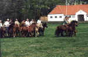 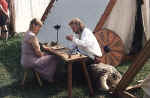 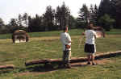 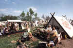 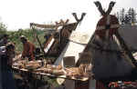


2001
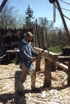 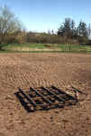 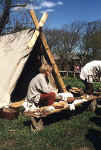 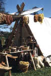 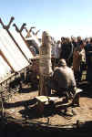 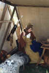 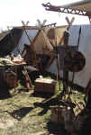


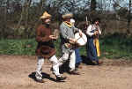 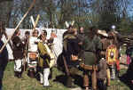 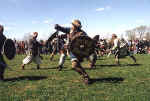 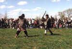 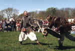


Nach § 22 KunstUrhG dürfen Fotografien von Personen grundsätzlich nur mit Einwilligung der Abgebildeten verbreitet oder öffentlich zur Schau gestellt werden.
Ich unterstelle, dass die hier gezeigten Personen keine Einwände gegen diese Veröffentlichung haben. Falls sich dennoch jemand auf meinen Fotos wieder erkennt und mit der Veröffentlichung wider Erwarten nicht einverstanden sein sollte, so genügt natürlich eine kurze Mitteilung an mich und ich werde die entsprechenden Bilder unverzüglich entfernen.